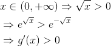

Exerciții și probleme rezolvate pentru profilul mate-info
- Această problemă a fost dată în sesiunea specială a anului 2012, pentru profilul matematică-informatică, la subiectul III, exercițiul 1.
Bacalaureat Matematică 2012 | Mate - Info | Sesiunea specială | Subiectul III
Se consideră funcția  , .
, .
- Calculați
 .
. - Demonstrați că funcția
 este convexă pe
este convexă pe  .
. - Arătați că funcția , este strict crescătoare pe
 .
.
Rezolvare:
- Calculăm
 folosind noțiunile învățate în ghidul Limite de funcții.
folosind noțiunile învățate în ghidul Limite de funcții.
Avem cazul de nedeterminare , Deci aplicăm regula lui l'Hospital:
Cum

și


- Pentru a demonstra convexitatea funcției
 calculăm derivata de oridinul I, respectiv derivata de oridinul II.
calculăm derivata de oridinul I, respectiv derivata de oridinul II.


 - funcție convexă.
- funcție convexă.
- Calculăm
 apoi
apoi 


 este strict crescătoare pe
este strict crescătoare pe  .
.
- Această problemă a fost dată în sesiunea iunie-iulie a anului 2013, pentru profilul matematică-informatică, la subiectul III, exercițiul 1.
Bacalaureat Matematică 2013 | Mate - Info | Sesiunea iunie-iulie | Subiectul III
Se consideră funcția  ,
,  .
.
- Calculați
 ,
,  .
. - Determinați ecuația tangentei la graficul funcției
 în punctul de abscisă
în punctul de abscisă  , situat pe graficul funcției .
, situat pe graficul funcției . - Demonstrați că
 , pentru orice .
, pentru orice .
Rezolvare:
- Calculăm .

- Ecuația tangentei la graficul funcției în punctul de abscisă este:


Ecuația tangentei devine:

Așadar, dreapta este ecuația tangentei la graficul funcției în punctul de abscisă , situat pe graficul funcției .
- Calculăm
 .
.


 - crescătoare pe
- crescătoare pe  .
.

![\begin{align*} &{f}'(x)\le 0, \forall x\in (-\infty, 0]\\ &{f}'(x)\ge 0, \forall x\in [0,+\infty)\\ \end{align*}](https://media.liceunet.ro/files/webbooks/images/240/equations/rA5yfm22j0CyNUb7MXSZQQ==.gif)
 - punct de minim pentru
- punct de minim pentru

Dar, la punctul b. am aflat că  .
.
Deci 
- Această problemă a fost propusă ca model pentru Bacalaureatul anului 2014, profilul matematică-informatică, la subiectul III, exercițiul 1.
Bacalaureat Matematică 2014 | Mate-info | Model de subiect | Subiectul III
Se consideră funcția  ,
,  .
.
- Calculați
 ,
,  .
. - Determinați ecuația asimptotei spre
 la graficul funcției
la graficul funcției  .
. - Determinați intervalele de monotonie ale funcției .
Rezolvare:
- Calculăm .

- Determinăm ecuația asimptotei spre la graficul funcției .
Fie dreapta  , unde
, unde  , iar
, iar ![n=\displaystyle\lim_{x\to+\infty} {[f(x)-mx]}.](https://media.liceunet.ro/files/webbooks/images/210/equations/YDKk9XORLiDriiqEbyN3Jw==.gif)
Calculăm acum pe  și pe
și pe  :
:
![\begin{align*} m &=\displaystyle\lim_{x\to+\infty} {\displaystyle\frac{f(x)}{x}}\\\\ &=\displaystyle\lim_{x\to+\infty} {\displaystyle\frac{\sqrt{x^2+x+1}}{x}}\\\\ &= \displaystyle\lim_{x\to+\infty} {\displaystyle\frac{\sqrt{x^2+x+1}}{\sqrt{x^{2}}}}\\\\ &=\displaystyle\lim_{x\to+\infty} {\displaystyle\sqrt{\frac{x^2+x+1}{x^2}}} \\\\ &= \displaystyle\lim_{x\to+\infty} {\displaystyle\sqrt{\frac{x^2\Big(1+\displaystyle\frac{1}{x}+\displaystyle\frac{1}{x^2}\Big)}{x^2}}} \\\\ &= \displaystyle\lim_{x\to+\infty} {\displaystyle\sqrt{1+\displaystyle\frac{1}{x}+\displaystyle\frac{1}{x^2}}} \end{align*}](../../media/webbooks/397/2752/images/equations/y9x9wd2f_niujy1bg6b07g==.gif)
Cum:

și

![\begin{align*} n &= \displaystyle\lim_{x\to+\infty} {[f(x)-mx]}\\\\ &= \displaystyle\lim_{x\to+\infty} {\Big(\displaystyle\sqrt{x^2+x+1}-1\cdot x\Big)}\\\\ &= \displaystyle\lim_{x\to+\infty} {\Big(\displaystyle\sqrt{x^2+x+1}-x\Big)}\\\\ &= \displaystyle\lim_{x\to+\infty} \displaystyle\frac{\Big(\displaystyle\sqrt{x^2+x+1}-x \Big)\cdot\Big(\displaystyle\sqrt{x^2+x+1}+x \Big)}{\displaystyle\sqrt{x^2+x+1}+x} \\\\ &= \displaystyle\lim_{x\to+\infty} \displaystyle\frac{\Big(\displaystyle\sqrt{x^2+x+1}\Big)^2-x^2}{\displaystyle\sqrt{x^2+x+1}+x}\\\\ &= \displaystyle\lim_{x\to+\infty} \displaystyle\frac{x^2+x+1-x^2}{\displaystyle\sqrt{x^2+x+1}+x}\\\\ &= \displaystyle\lim_{x\to+\infty} \displaystyle\frac{x+1}{\displaystyle\sqrt{x^2\Big(1+\displaystyle\frac{1}{x}+\displaystyle\frac{1}{x^2}\Big)}+x}\\ \\&=\displaystyle\lim_{x\to+\infty} \displaystyle\frac{x+1}{x\displaystyle\sqrt{1+\displaystyle\frac{1}{x}+\displaystyle\frac{1}{x^2}}+x} \end{align*}](../../media/webbooks/397/2752/images/equations/s-nfcgphkgemtbi44-yykw==.gif)
Simplificăm fracția de mai sus astfel:

Cum:
și
Dreapta de ecuație  este asimptotă oblică spre la graficul funcției .
este asimptotă oblică spre la graficul funcției .
- Determinăm intervalele de monotonie ale funcției .
La punctul a. am calculat derivata funcției .
Egalăm  și îl găsim pe
și îl găsim pe  .
.
Avem următorul tabel de variație al funcției :

Din tabelul de mai sus deducem că:
 ,
, ![\begin{align*} x\in\Big(-\infty,-\displaystyle\frac{1}{2}\Big] \Rightarrow f \end{align*}](https://media.liceunet.ro/files/webbooks/images/210/equations/PrScVr34mWaZ2Kl-vXbQww==.gif) - descrescătoare pe
- descrescătoare pe ![\begin{align*} \Big(-\infty,-\displaystyle\frac{1}{2}\Big]; \end{align*}](https://media.liceunet.ro/files/webbooks/images/210/equations/aiZk2GCfFXVGbcSA5fjriQ==.gif)
 ,
,  - crescătoare pe intervalul
- crescătoare pe intervalul 
- Această problemă a fost dată în sesiunea august-septembrie a anului 2015, pentru profilul matematică-informatică, la subiectul III, exercițiul 1.
Bacalaureat Matematică 2015 | Mate-Info | Sesiunea august-septembrie | Subiectul III
Se consideră funcția 
- Arătați că

- Determinați ecuația asimptotei orizontale spre
 la graficul funcției
la graficul funcției 
- Arătați că derivata funcției
 este descrescătoare pe
este descrescătoare pe 
Rezolvare:
- Calculăm


- Pentru a determina ecuația asimptotei orizontale spre la graficul funcției , calculăm următoarea limită:
![\begin{align*} &\lim_{x\to+\infty}f(x)= \lim_{x\to+\infty}\Big(x-\sqrt{x^2+1}\Big)\\\\ &=\lim_{x\to+\infty}\displaystyle\frac{\Big(x-\sqrt{x^2+1}\Big)\Big(x+\sqrt{x^2+1}\Big)}{x+\sqrt{x^2+1}}\\\\&=\lim_{x\to+\infty}\displaystyle\frac{x^2-\Big(\sqrt{x^2+1}\Big)^2}{x+\sqrt{x^2+1}}\\\\ &=\lim_{x\to+\infty}\displaystyle\frac{x^2-(x^2+1)}{x+\sqrt{x^2+1}}\\\\&=\lim_{x\to+\infty}\displaystyle\frac{x^2-x^2-1}{x+\sqrt{x^2+1}}\\\\&=\lim_{x\to+\infty}\displaystyle\frac{-1}{x+\sqrt{x^2+1}}\\\\&=\lim_{x\to+\infty}\displaystyle\frac{-1}{x+\sqrt{x^2\Big(1+\displaystyle\frac{1}{x^2}\Big)}}\\\\&=\lim_{x\to+\infty}\displaystyle\frac{-1}{x+x\sqrt{1+\displaystyle\frac{1}{x^2}}}\\\\&=\lim_{x\to+\infty}\displaystyle\frac{-1}{x\Big(1+\sqrt{1+\displaystyle\frac{1}{x^2}}\Big)}\\\\ \end{align*}](../../media/webbooks/397/2752/images/equations/ckwrdgrhfrratdbt_vhfga==.gif)
Cum  ne rezultă că:
ne rezultă că:
 .
.
Așadar, asimptota orizontală spre la graficul funcției este dreapta de ecuație 
- Arătăm că derivata funcției este descrescătoare pe
La subpunctul  am calculat derivata de ordinul întâi a funcției , ea fiind definită astfel
am calculat derivata de ordinul întâi a funcției , ea fiind definită astfel

Calculăm derivata a doua a acestei funcții și îi studiem semnul.
![\begin{align*} &f''(x)=\big[f'(x)\big]'=\\\\ &=\Big[1-\displaystyle\frac{x}{\sqrt{x^2+1}}\Big]'\\\\ &=1'-\Big(\displaystyle\frac{x}{\sqrt{x^2+1}}\Big)'\\\\ &=0-\displaystyle\frac{x'\cdot\sqrt{x^2+1}-x\cdot\Big(x^2+1\Big)'}{\Big(\sqrt{x^2+1}\Big)^2}\\\\ &=-\displaystyle\frac{1\cdot\sqrt{x^2+1}-x\cdot\displaystyle\frac{(x^2+1)'}{2\sqrt{x^2+1}}}{x^2+1}\\\\ &=-\displaystyle\frac{\sqrt{x^2+1}-x\cdot\displaystyle\frac{2x}{2\sqrt{x^2+1}}}{x^2+1}\\\\ &=-\displaystyle\frac{\sqrt{x^2+1}-\displaystyle\frac{x^2}{\sqrt{x^2+1}}}{x^2+1}\\\\ &=-\displaystyle\frac{\displaystyle\frac{\Big(\sqrt{x^2+1}\Big)^2-x^2}{\sqrt{x^2+1}}}{x^2+1}\\\\&=-\displaystyle\frac{x^2+1-x^2}{\sqrt{x^2+1}}\cdot\displaystyle\frac{1}{x^2+1}\\\\&=-\displaystyle\frac{1}{(x^2+1)\sqrt{x^2+1}} \end{align*}](https://media.liceunet.ro/files/webbooks/images/327/equations/L-1JJNbHJjPGGxvyBG3vZQ==.gif)

Cum

și


Deci funcția  este descrescătoare pe
este descrescătoare pe
Dacă vrei să vezi și să rezolvi mai multe probleme cu funcții derivabile poți accesa unul din eBook-urile următoare (Subiectul III, exercițiul 1):
Bacalaureat Matematică 2012 | Mate - Info | Model de subiect | Subiectul III
Bacalaureat Matematică 2013 | Mate - Info | Sesiunea specială | Subiectul III
Bacalaureat Matematică 2014 | Mate-Info | Sesiunea august-septembrie | Subiectul III
Bacalaureat Matematică 2015 | Mate-info | Sesiunea iunie-iulie | Subiectul III.